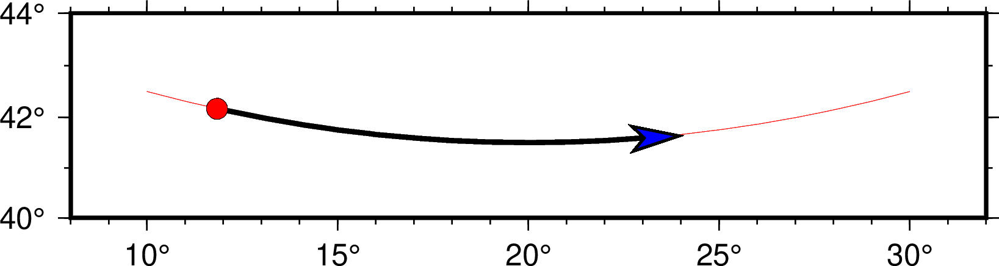

線條屬性¶
對於線條而言，其基本的畫筆屬性由三個：線寬、顏色和線型，在 畫筆 中已經做過介紹。除此之外，某些模塊還可以爲線條設置額外的屬性，這些額外的屬性可以通過在畫筆屬性後加上子選項來是實現。
線條的額外屬性包括：端點偏移量、線條平滑和端點箭頭。
端點偏移量¶
在給定若干個數據點繪製線條時，一般都是從起點（第一個點）一直畫到終點（最後一個點）。可以使用 +o 子選項爲線段兩端指定偏移量，使得繪製線段時的起點和終點與輸入數據中指定的起點和終點間存在一定的偏移量。該子選項的語法是： +ooffset[u]
- 若只給了一個 offset，則表示起點和終點共用同一個偏移量
- 也可以用 offset/offset 分別爲起點和終點指定不同的偏移量
- 對於每個偏移量，都可以使用長度單位 c|i|p 或距離單位
下面的示例展示了 +o 子選項的用法和使用效果。圖中，細線和粗線使用了相同的輸入數據，其中細線沒有使用 +o，此時線段的起點和終點與數據指定的點重合；粗線在繪製線條時使用了 -W2p+o1c/500k 選項，即在起點處偏移1釐米，在終點處偏移500千米。
線段起點偏移示意圖
線條平滑¶
通常情況下，在繪製線條時，兩點之間是用直線連接的（地圖上兩點之間默認用大圓弧連接）。使用 +s 子選項會使用 Bezier splines 在兩點之間做樣條插值以得到更光滑的曲線。
下圖中，左圖使用了 -W2p 選項，右邊使用了 -W2p+s。
線條自動樣條插值示意圖
端點箭頭¶
默認情況下，在繪製線段時，線段的兩個端點並沒有什麼特別的。使用 +v 子選項，可以在線段的一端或兩段繪製端點箭頭。該子選項的語法爲： +v[b|e]vspecs
- 默認會在線段兩端都加上箭頭，b|e 表示只繪製開頭或結尾的箭頭
- vspecs 用於指定端點箭頭的屬性，詳見 繪製矢量/箭頭
下圖中細線是通常繪製的線段，粗線使用的選項是 -W2p+o1c/500k+vb0.2i+gred+pfaint+bc+ve0.3i+gblue

線條端點箭頭示意圖
其它屬性¶
除了上面提到的屬性之外，GMT中還有一些參數可以影響線段的外觀。這些參數包括：
- PS_LINE_CAP：控制線段頂端的繪製方式
- PS_LINE_JOIN：控制線段拐點/交點的繪製方式
- PS_MITER_LIMIT：控制線段拐點在
miter模式下的閾值